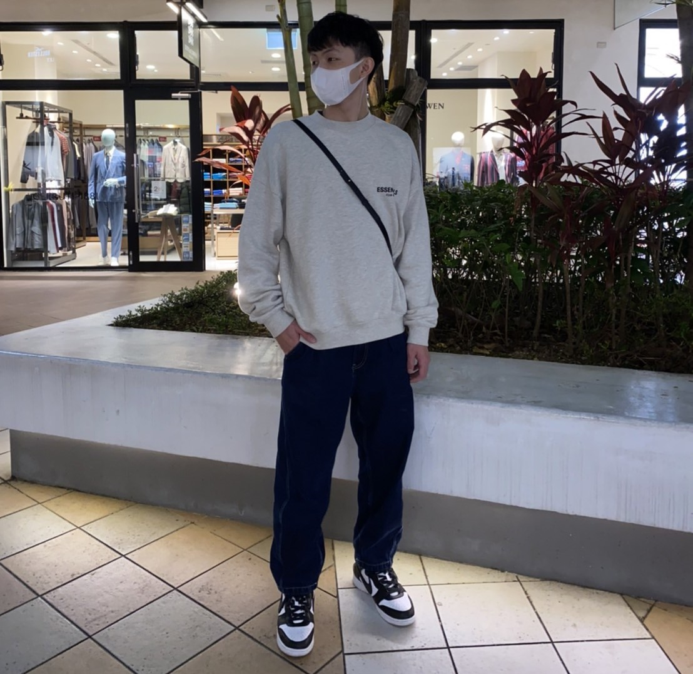
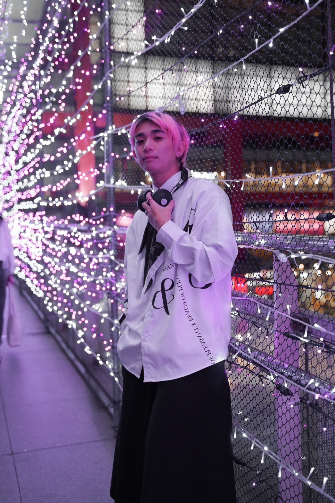

平台介紹
出售俊男美女的專屬夢幻車款，還在煩惱有錢買不到的車款嗎，來我們Daydream garagex來實現夢想吧!
擁有一條龍的購車服務，讓您有完美舒適的購車體驗。
組員介紹
孫睿
負責內容
專案功能設計、網頁統整、首頁、購物車、關於我們、
目前就讀中原資管系二年級，個性比較安靜。興趣是組電腦，也會當別人組電腦時諮詢的對象。
也喜歡和朋友去唱歌，聽的音樂主要是饒舌，所以我業唱主要也是唱饒舌歌。
會選擇資管系的原因是希望以後找的到工作，而且薪水不會太低。
這堂課我認為是替我未來的工作打好基礎的重要一步，教授教的東西很多也很重要， 所以我也盡力學習有用的知識。
陳彥州
負責內容
搜尋商品圖片與資料，註冊、登入、與商品頁面
大家好，我是陳彥州，也可以叫我阿州，目前就讀中原大學資管系，從小就愛打球的我，
在國小就加入了籃球校隊，一直到大學才沒有繼續參加，因為小學到高中都參加籃球隊，
養成了不會遲到的好習慣，自我要求高，也就因這樣在國小國中擔任球隊的隊長，高中擔任副隊長。
因考慮到運動員生涯短暫，到了大學就沒有選擇繼續打球，並開始拿起書本，增廣見聞，
罪己的未來添加多條選擇。我的個性樂觀內向活潑，喜歡與朋友出去玩，脾氣溫和，也能快速融入新的環境。
我的興趣是與朋友打球、逛街、唱歌還有喜歡在安靜的環境下聽音樂。
張維銚
負責內容
後端組員
大家好，我張維銚，在學習這堂課之前，我對程式認知是只能完成單一功能，像是乘法表，計數器，表單等等。
可是經過這一次的前後端整合，讓我明白了網頁很複雜，不單單只是前端的介面，只要把版面設計好就可以，
在網站背後都有很多不同的程式和排版架構需要整合，才是完整的網站，這大大地改變了我的想法。
我認為這堂課可以把之前學到的東西和新學到的內容互相融合，這是個很值得挑戰的事。
同時在整合的過程中也讓我學會了溝通合作的能力，明白一個專案的完成需要時間去溝通和規劃的。
這次的專案給我的經驗不單單只是技術上的成長，更多的是與人協調的經驗。
李俊翰
負責內容
後端組員
製作網頁後端是一個非常有挑戰性但同時也非常有趣和充滿滿足感的任務。
上學期，我學到了前端的操作，這學期學了後端的操作。我認爲後端比前端更為複雜，
主要是我對於JSP的操作沒有HTML熟悉。但我在製作後端和前端結合的過程中，
還花了不少時間。另外，比較困難的地方是在登錄控制那個部分。
總的來説，這次的期末專題不僅僅讓我更深入的學會JSP的操作，
也對我以後自作任何程式方面的東西更熟悉了。
粕谷玲士
負責內容
後端組員
通過將本課程與多媒體配對，我能夠學習如何將其應用於網站！
通過這堂課，我學到了更多實用的方法，比如如何表達佈局和框架。
共 0 則留言